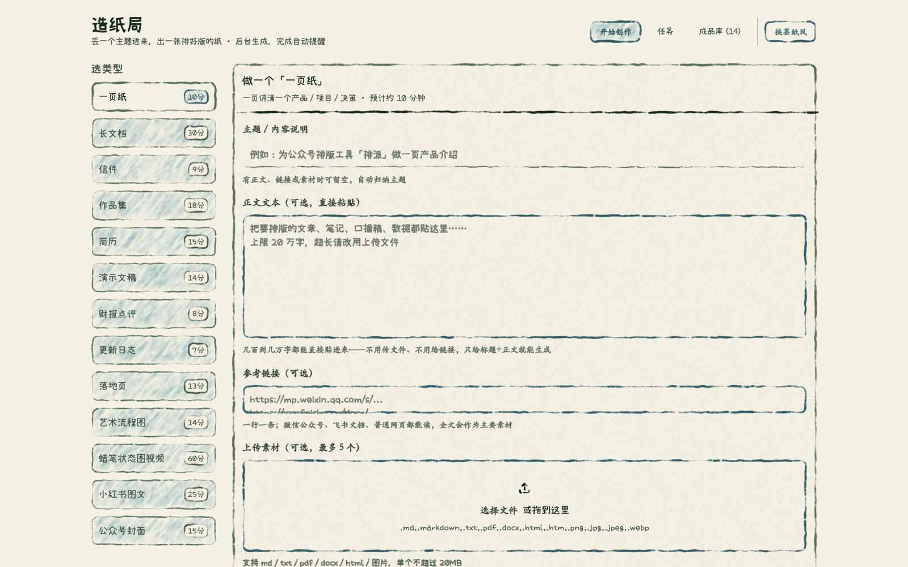
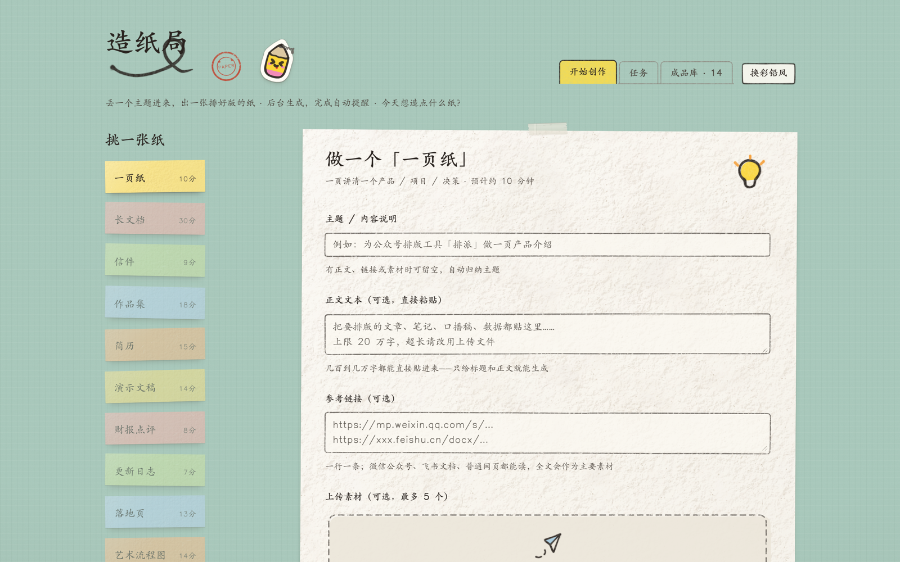
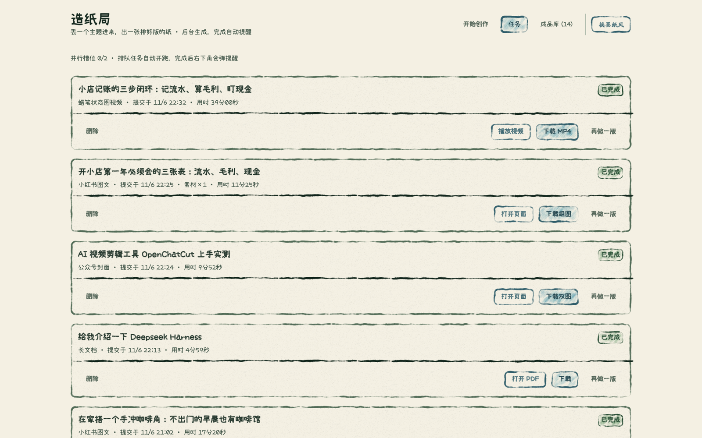

造纸局是一台跑在你自己电脑上的内容生成工作台:选好产出类型、贴上素材,后台 AI 引擎自动写稿、排版、配音、渲染——完成弹提醒,成品直接下载。PDF、网页、组图、带字幕的 MP4,13 种格式,全程不用打开任何设计软件。
需已安装并登录 Claude Code 命令行(生成引擎走你自己的账号)。数据全部留在本机,不出门。

文档类走 kami 排版引擎,图文卡走 guizang 社交卡引擎,视频走 sweety 状态图引擎——全部内置,一次安装全解锁。
彩铅风手绘轻盈,墨纸风纸纹沉浸——同一套后端,两种手感,右上角一键切换并记住你的偏好。


选一种产出类型,贴上正文 / 链接 / 素材(也可以只写一句主题,引擎自己查资料)。
写稿 → 排版 → 两轮渲染自检 → 配音渲染,并行 2 单排队,你可以关掉窗口去干别的。
完成桌面弹窗,点开就是成品:PDF / HTML / 组图 ZIP / MP4,直接下载发布。
git clone https://github.com/young920/kami cd kami/workbench && bash setup-mac.sh npm start